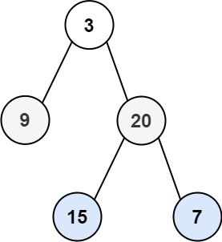

题面
给你二叉树的根节点 root ，返回其节点值的 层序遍历 。 （即逐层地，从左到右访问所有节点）。
示例 1：

输入： root = [3,9,20,null,null,15,7]
输出：[[3],[9,20],[15,7]]示例 2：
输入： root = [1]
输出：[[1]]示例 3：
输入： root = []
输出：[]提示：
- 树中节点数目在范围
[0, 2000]内 -1000 <= Node.val <= 1000
思路
- 和最大深度的 BFS 解法框架完全一样，只是把
res += 1（数层数）换成"收集当前层的值"：
# 最大深度 BFS：数层数
res += 1
# 层序遍历 BFS：收集当前层的值
vals.append(node.val)
res.append(vals)res.append(vals)而不是res.extend(vals)：题目要求返回二维列表，每层一个子列表。append把vals作为一个整体加进去 →[[3], [9, 20]]；extend会把元素拆开 →[3, 9, 20]
代码实现
class Solution:
def levelOrder(self, root: Optional[TreeNode]) -> List[List[int]]:
if not root:
return []
res = []
queue = []
queue.append(root)
while queue:
tmp = []
vals = []
for node in queue:
vals.append(node.val)
if node.left: tmp.append(node.left)
if node.right: tmp.append(node.right)
queue = tmp
res.append(vals)
return res- 复杂度：时间 O(n)，空间 O(n)（队列最多存一层的节点数）